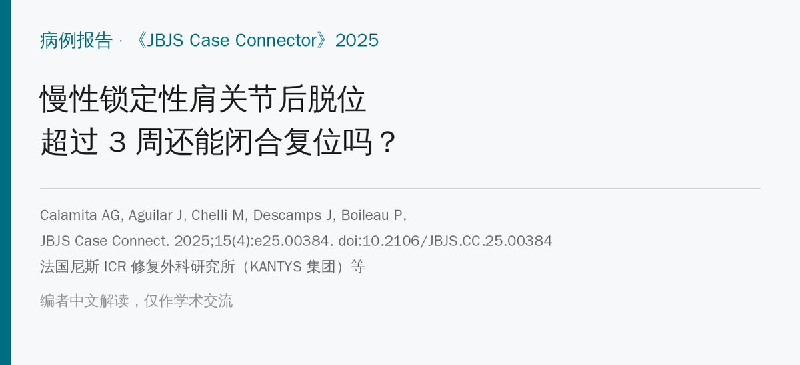
🔖原文信息（编者中文重排）
📚 文献信息
▪ Calamita AG, Aguilar J, Chelli M, Descamps J, Boileau P. Treatment of Chronic Locked Posterior Dislocation of the Shoulder: Is There a Time Limit to Try a Closed Reduction? A Report of 3 Cases. JBJS Case Connect. 2025;15(4):e25.00384. doi:10.2106/JBJS.CC.25.00384
▪ 作者单位：法国尼斯 ICR 修复外科研究所（KANTYS 集团），以及意大利、西班牙、法国巴黎的骨科
▪ 文章类型：病例报告（3 例，随访 2～5 年）
• 传统观点：肩关节后脱位超过 3 周、或反 Hill-Sachs 缺损 >25%，就不该再闭合复位，直接手术
• 本文 3 例在受伤 4～10 周后、缺损 25%～36%，在全麻肌松下用“双拇指”手法闭合复位，全部成功
• 复位后外旋位固定 6 周，3 个月内避免强力内旋；随访 2～5 年无再脱位、无股骨头坏死、无骨关节炎
• 但只有 3 例，且由手法发明者团队完成，只能说明“时间界限也许没那么死”
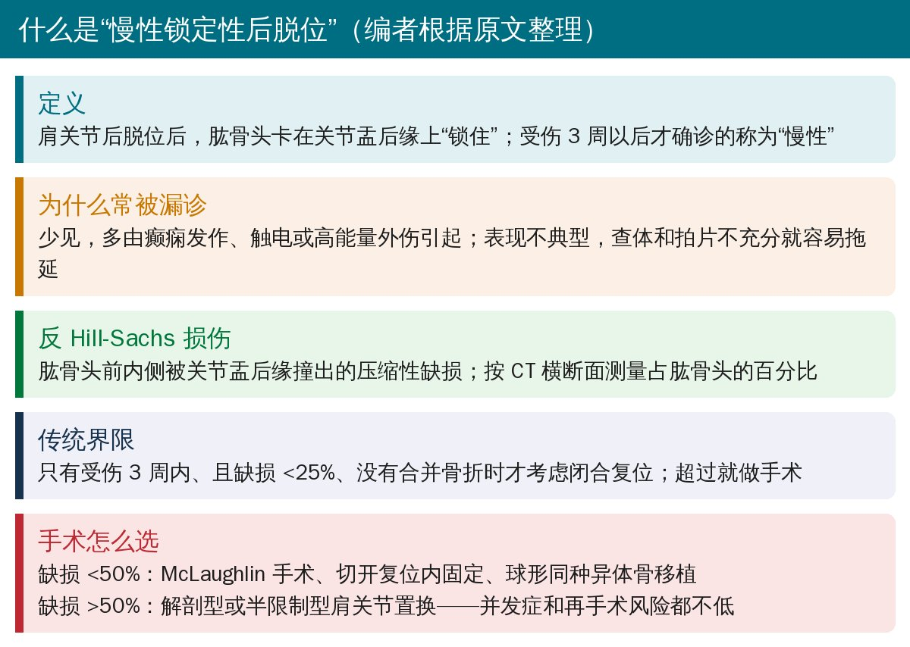
🔖背景（编者根据原文整理）
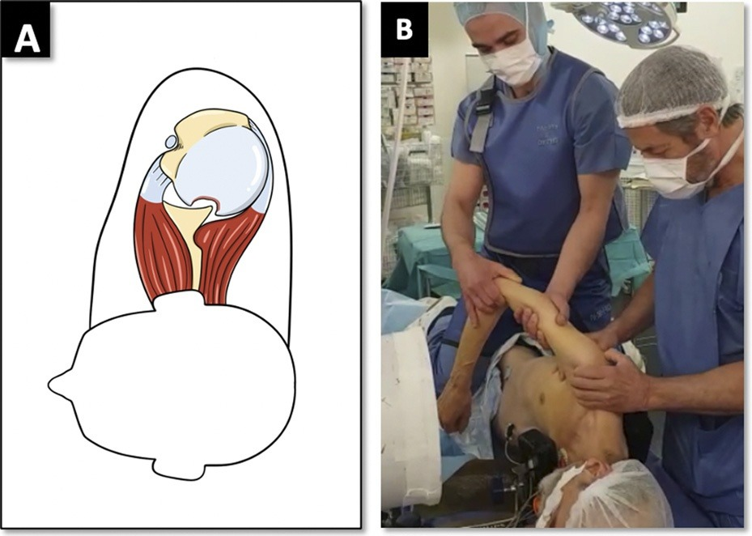
🔖原文图 11：a 锁定性后脱位和反 Hill-Sachs 损伤示意图；b 复位体位——患者侧卧、全麻肌松，助手跪在手术台上稳住上肢，术者站在后方
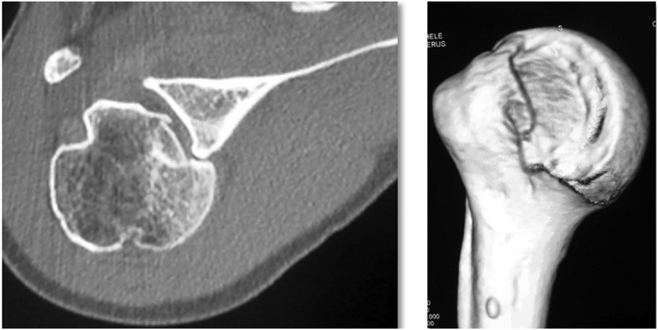
🔖原文图 2：病例 1 的 CT 横断面（左）和三维重建（右），肱骨头卡在关节盂后方，前内侧有明显的压缩缺损（反 Hill-Sachs 损伤）
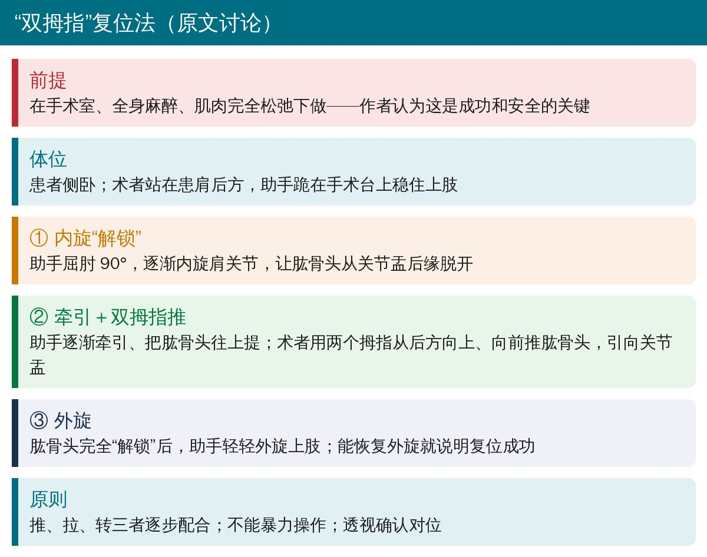
🔖复位三步（据原文整理）
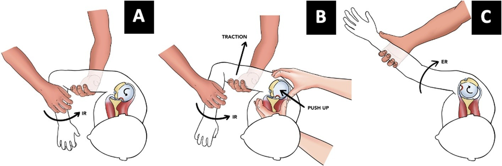
🔖原文图 12：双拇指复位三步。a 助手逐渐内旋（IR），让肱骨头从关节盂后缘脱开；b 助手牵引（TRACTION）上提，术者双拇指向前上推（PUSH UP）；c 解锁后助手外旋（ER），能恢复外旋即复位成功
作者特别强调：这一手法要在手术室、全身麻醉、肌肉完全松弛下进行，推、拉、转逐步配合，不能暴力，并在透视下确认对位。
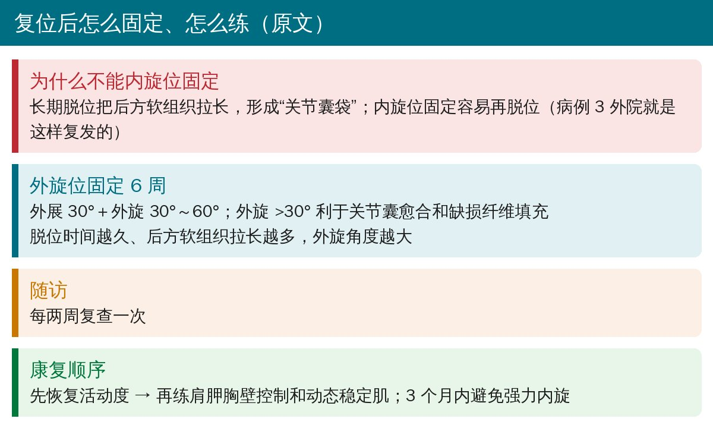
🔖固定与康复（据原文整理）
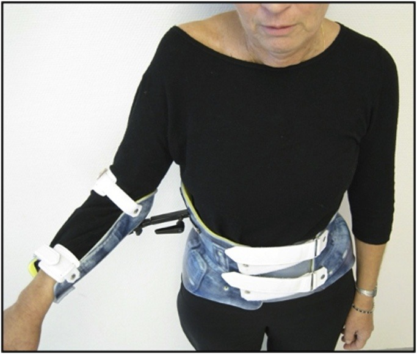
🔖原文图 3：外旋 30°、外展 30° 的肩关节支具，固定 6 周后开始系统康复
这和常见的“肩关节脱位后内旋位吊带”正好相反。原因是后脱位锁住几周后，后方关节囊被拉长成一个袋子，内旋位会让肱骨头又滑回去——病例 3 在外院复位后就是因为内旋位固定而复发。
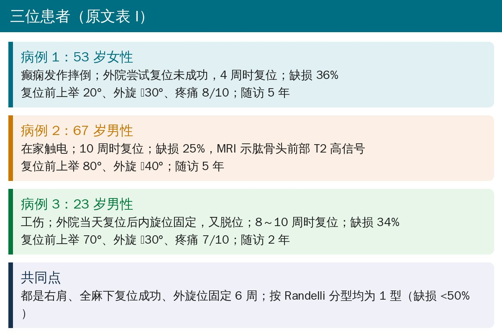
🔖三位患者（据原文表 I 整理）
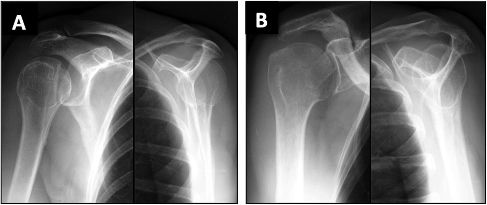
🔖原文图 1：a 复位前正位片（左）和肩胛 Y 位片（右），锁定性后脱位；b 末次随访，肱骨头居中，无骨关节炎
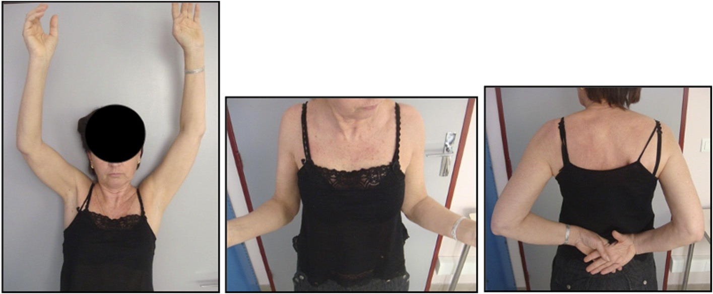
🔖原文图 4：5 年随访，主动上举、外旋、内旋均恢复
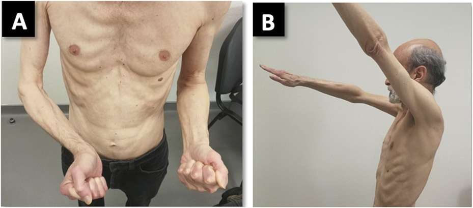
🔖原文图 5：受伤 10 周时，a 右肩外旋明显受限，b 主动前屈上举受限
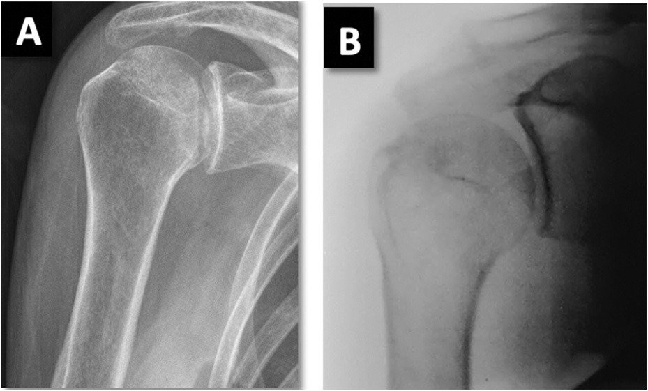
🔖原文图 6：a 正位片关节间隙消失，可见“双轮廓征”，提示锁定性后脱位；b 术中透视确认复位
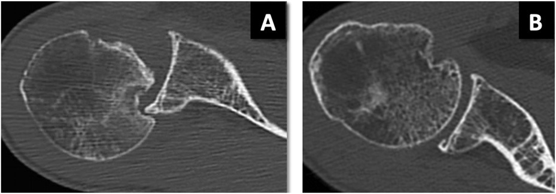
🔖原文图 7：a 复位前 CT，锁定性后脱位伴反 Hill-Sachs 损伤；b 5 年随访，肱骨头居中，无骨关节炎
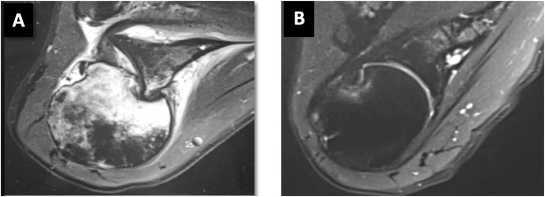
🔖原文图 8：MRI T2 横断面，a 确诊时肱骨头前部明显高信号，b 1 年后完全消退
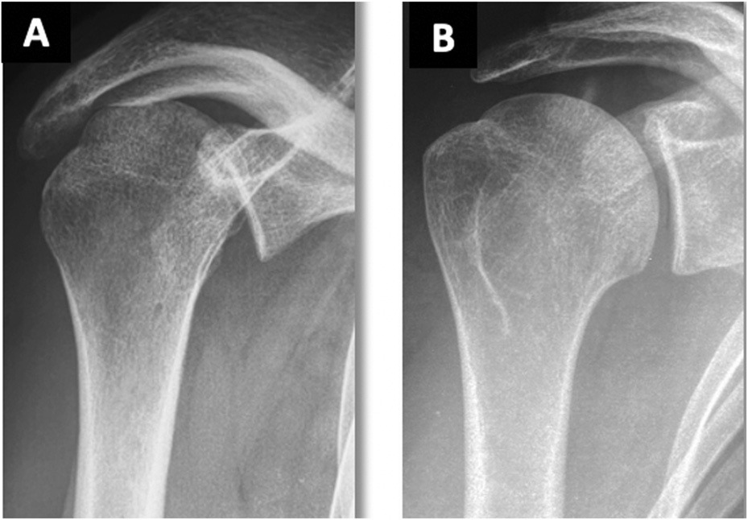
🔖原文图 9：a 复位前正位片，锁定性后脱位；b 末次随访，肱骨头居中、关节间隙保留
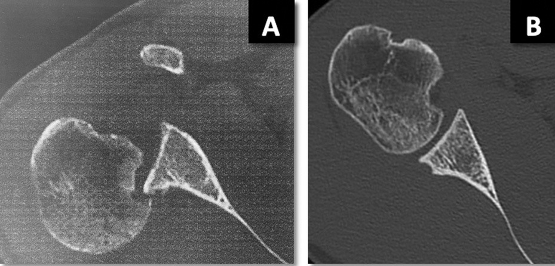
🔖原文图 10：a 复位前 CT，锁定性后脱位伴反 Hill-Sachs 损伤；b 复位后 CT，肱骨头居中，无骨关节炎
原文表 I：末次随访结果
| 病例 1 | 病例 2 | 病例 3 | |
|---|---|---|---|
| 复位时间 | 4 周 | 10 周 | 8 周 |
| 缺损占肱骨头 | 36% | 25% | 34% |
| 固定体位（6 周） | 外旋 30°＋外展 30° | 外旋 60°＋外展 30° | 外旋 60°＋外展 30° |
| 随访 | 5 年 | 5 年 | 2 年 |
| 主动上举 / 外旋 / 内旋 | 170° / 50° / T12 | 180° / 50° / T12 | 180° / 60° / T12 |
| 疼痛 VAS | 2/10 | 0/10 | 0/10 |
| 主观肩关节评分（SSV） | 80% | 100% | 90% |
| Constant / Rowe / Walch-Duplay | 79 / 90 / 90 | 93 / 100 / 100 | 91 / 80 / 90 |
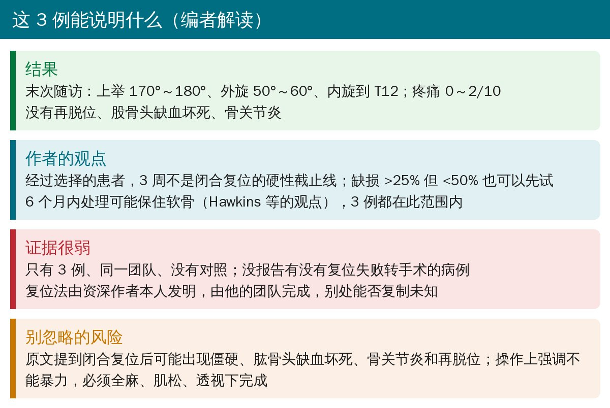
🔖编者解读
• 病例报告：3 例、同一团队、没有对照组，也没说期间有没有闭合复位失败、转为手术的患者
• 3 例缺损都 <50%（Randelli 1 型），作者也只把结论限定在 25%～50% 之间
• 优点：有 2～5 年的影像和功能随访，病例 2 还有 MRI 证明肱骨头前部的异常信号 1 年后消退
• 病例 3 正文写 10 周转诊，表 I 写 8 周复位
• 摘要说 3 例缺损都 >25%，但病例 2 是 25%
• 讨论说外旋 >30° 固定，病例 1 实际是 30°
• 癫痫、触电后的肩痛，外旋明显受限（甚至外旋不到中立位），要想到后脱位；正位片“双轮廓征”，加拍肩胛 Y 位片，CT 可确认并测量缺损
• 超过 3 周不一定只能手术：缺损 <50%、无合并骨折时，可在有经验的中心考虑全麻下闭合复位
• 复位后外旋位固定 6 周，3 个月内避免强力内旋；康复先恢复活动度，再练肩胛控制和动态稳定
欢迎关注骨科康复小黄公众号，获取更多物理治疗的专业知识！
📄参考文献：
Calamita AG, Aguilar J, Chelli M, Descamps J, Boileau P. Treatment of Chronic Locked Posterior Dislocation of the Shoulder: Is There a Time Limit to Try a Closed Reduction? A Report of 3 Cases. JBJS Case Connect. 2025;15(4):e25.00384. doi:10.2106/JBJS.CC.25.00384
原文以知识共享署名-非商业性使用-禁止演绎（CC BY-NC-ND 4.0）协议开放获取，版权归原作者所有。本文为非商业的学术交流中文解读：原文图 1～12 原样引用，未作任何修改，中文说明见图注；编者整理卡为编者根据原文撰写。仅供学习交流，如有侵权请联系删除。